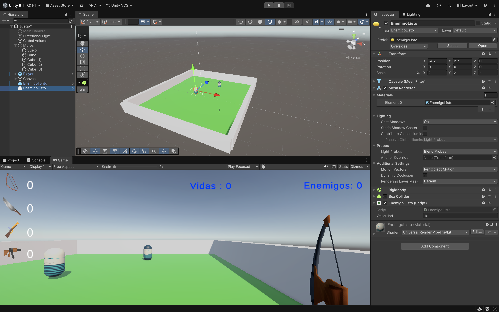
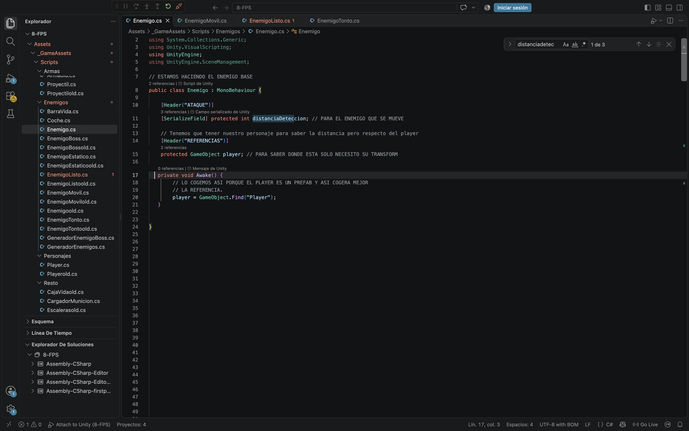
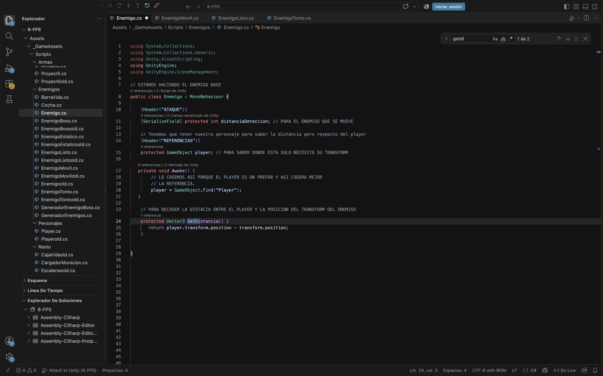
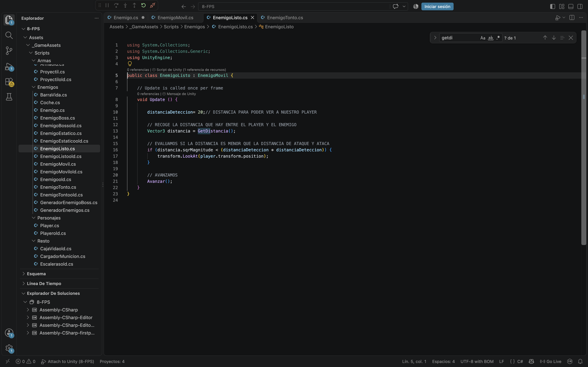
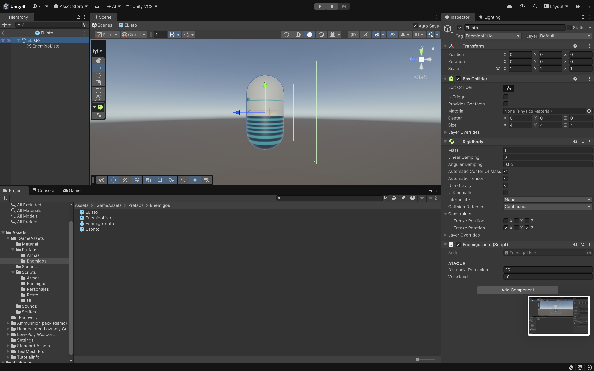
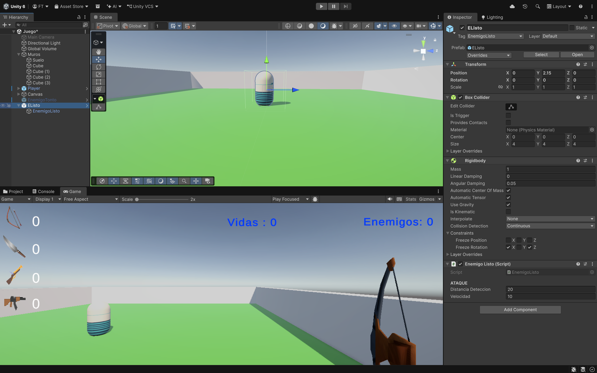
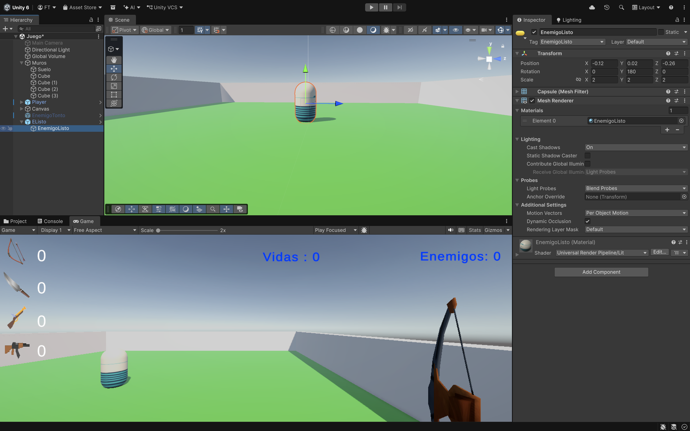
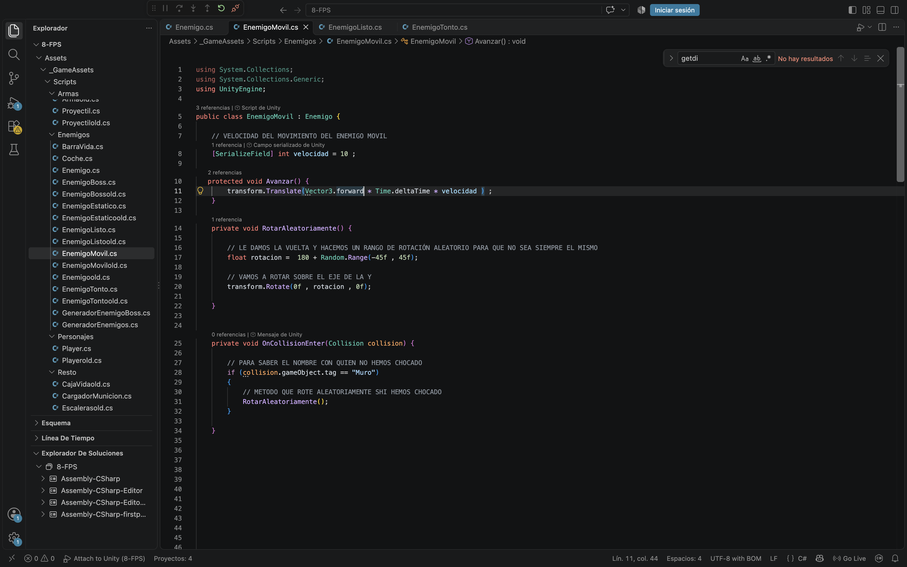
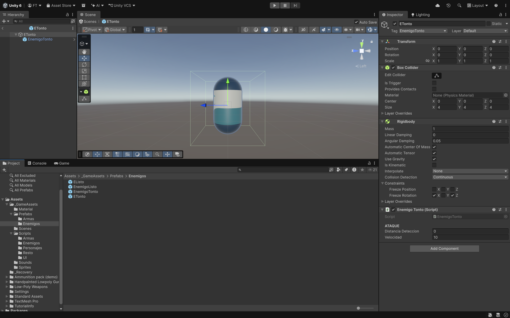

El Enemigo Listo también se movera como el Tonto pero cuando este a una cierta distancia del Player ira hacia el.
Ahora necesitamos otro Script EnemigoListo.cs y se lo añadimos al prefab del EnemigoListo que heredara de EnemigoMovil.cs.
Comprobar el Rigibody del EnemigoListo poner Interpolate a None y Collision Detection a Continuos. Y en Contraints marcar solo Freeze Rotacion X y Z.
Y arrastramos el Prefab a la Escena.

Variable distanciaDeteccion sera protected para poder usarla en los hijos y SerializeField para poderla modificar en el Editor.
Y también necesitamos una referencia del Player protected para saber la distancia que hay entre el Enemigo y el Player. Y tenemos que recoger esa referencia en el Awake() haciendo un Find para encontrarlo.

En Unity no puedes arrastrar directamente un archivo Prefab desde la ventana del proyecto (Project) a una variable de tipo GameObject o componente dentro del Inspector de otro Prefab si estás editando el Prefab de forma aislada. Por esto lo hacemos buscando al Player con Find.
Método GetDistance(). Creamos este método que nos devolvera un Vector3 con la distancia entre el Player y el enemigo. Y también de tipo protected.

Método Update().
- Ponemos una distanciaDeteccion por defecto. Aunque realmente el valor que usara es el que está en el Editor de Unity.
- Recogemos en un Vector3 la distancia llamando al Método GetDistance() del padre.
- Y si sqrMagnitude < distanciaDeteccion * distanciaDeteccion le hacemos un LookAt a la posición del Player.
- Y por último llamamos al Método Avanzar() continuamente que está en el Script de su padre EnemigoMovil.cs.
El sqrMagnitude es una propiedad de los vectores (como Vector2 o Vector3) que devuelve el cuadrado de la longitud (magnitud) del vector.
El sqrMagnitude: Calcula x² + y² + z²

Si ejecutamos comprobamos que nuestro EnemigoListo no va a por el Player cuando está a una cierta distancia. Esto es debido a que el LookAt lo hace sobre el eje Z en positivo y el sprite de la cara mira al lado contrario.
La solución será que nuestro EnemigoListo su sprite este mirando hacia la Z en positivo. Para ello haremos lo siguiente:
- Crear en la Hierarchy un GO vacio (Pivot y Global) que se llame "EListo":
- Position 0,0,0.
- Tag "EnemigoListo".
- BoxCollider (Center 0,0,0 y Size 4,4,4).
- RigidBody
- Añadir el Script EnemigoListo.cs.
Que sus propiedades sean iguales a los que tiene el Prefab EnemigoListo.

- Abrir el Prefab EnemigoListo. En su transform/Position 0,0,0 (Para que se quede centrado) y en Rotation Y le ponemos 180 y eliminar:
- BoxCollider.
- RigidBody
- Script EnemigoListo.cs.
- Y arrastrar el Prefab dentro del GO EListo.
- Una vez hecho volver arrastrar EListo al directorio de Prefabs/Enemigos. Y este es el que utilizaremos en la Escena.


Faltaria modificar su Método Avanzar del EnemigoMovil.cs para que se mueva hacia el forward.

Hay que hacer lo mismo con el Enemigo Tonto.
